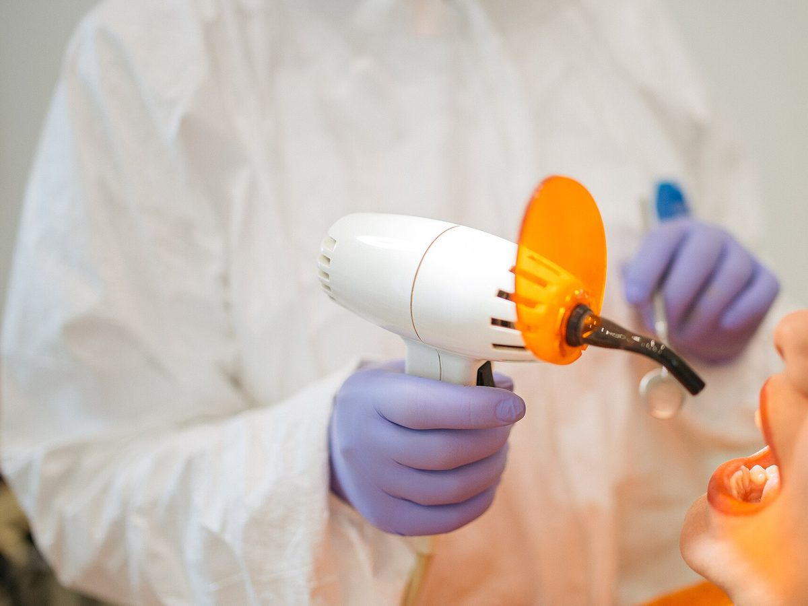

Limpieza y control
Recomendado cada 6 meses. Te avisamos cuando toca.
Atención cálida y explicaciones claras en cada paso. Pedí turno por WhatsApp y recibí el recordatorio el día anterior.
Atendemos obras sociales y prepagas: consultá la tuya.

Recomendado cada 6 meses. Te avisamos cuando toca.
Tratamientos por etapas con turnos coordinados.
Brackets y alineadores, con controles mensuales.
En consultorio, en una o dos sesiones.
Cada paciente recibe un recordatorio por WhatsApp el día anterior y puede confirmar o reprogramar en el momento. Así ningún tratamiento queda a mitad de camino.
Sí, dentro del horario. Escribinos y te damos el primer lugar disponible.
Trabajamos con las principales obras sociales y prepagas. Escribinos con la tuya y te confirmamos.
Los tratamientos largos, como ortodoncia, se pueden pagar en cuotas.
Escribinos con tu obra social y el motivo de la consulta, y te damos el primer turno disponible.